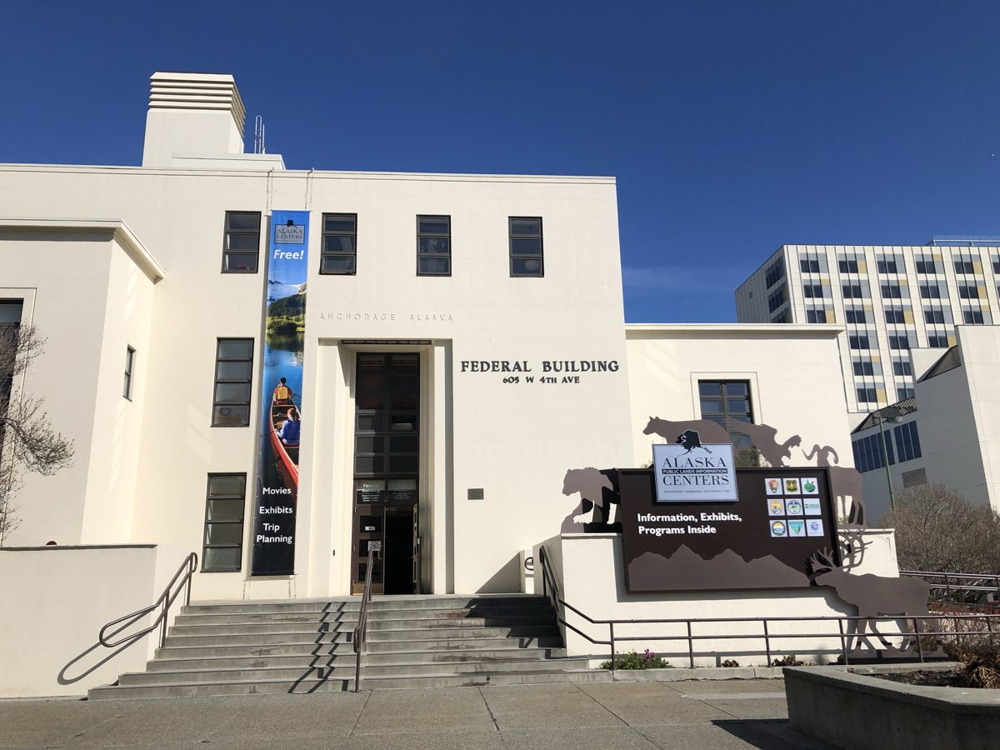
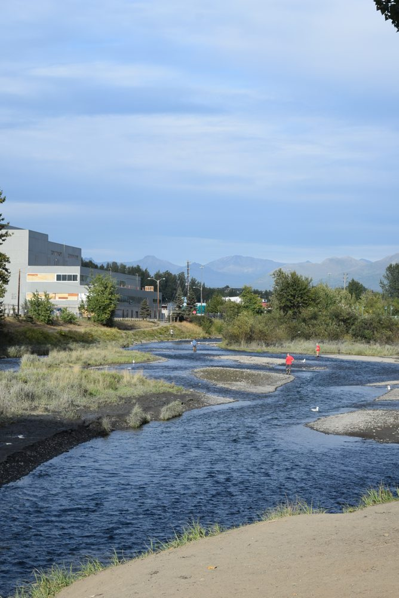
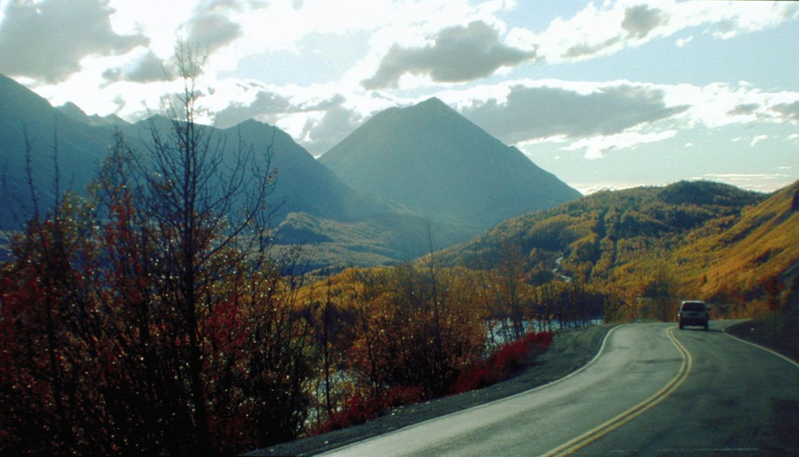

DAY 1 / 7 / 9
安克拉治，串起每一段。
抵達、補給、天候緩衝與返程集中在這裡。
全部為阿拉斯加當地時間。「班表／業者」為官方所列時間；「建議／估時／示範」是本行程預留的活動與移動時間。火車頁面已更新到 2027 夏季；公園接駁仍有 2026 版本，請核對出遊年度。不同船班請依票券替換；本表採 12:00 Seward 船班。
DAY 01
Anchorage 抵達與補給
抵達日只負責把隔天的火車行程準備好。此頁以午後抵達為例；若晚班機才到，就直接入住，不必補跑市區。
今晚住宿區域：Anchorage
- 14:00–15:30建議
抵達、領行李與前往住宿
這是抵達日時間配置示範，不是指定航班。選擇能安排隔天清晨交通的 Anchorage 住宿。
- 15:30–16:30建議
入住、確認去車站的方式
隔天 05:45 要到 Anchorage Depot。若火車與住宿一起訂，今天核對套裝安排的清晨飯店接送時間與候車位置；其他旅客則向住宿確認火車站接駁或提前預約車輛。
- 16:30–17:30建議
補給：水、早餐、點心
Kenai Fjords Tours 的鐵路搭配產品列有午餐，但仍應依所訂產品確認。準備保暖防水外套、暈船用品與相機，留下大行李，只帶當日用品。
- 17:30–19:00建議
晚餐，整理車票與船票
核對列車、船公司、接駁點、報到要求與延誤處理。把票券下載到手機；隔天很早出門，今晚不安排晚結束的表演。
- 20:00 起建議
休息
明天是 06:45 出發、22:15 回到 Anchorage 的長日行程。
DAY 07
Anchorage 緩衝與 Copper Center 移動
先確認 Day 6 看熊已完成，再執行下午的公路段。這一天只安排半天市區，不把所有博物館與景點塞滿。
今晚住宿區域：正常版：Copper Center；看熊補飛版：Anchorage
- 09:00–10:30建議
Alaska Public Lands Information Center
開門日可認識阿拉斯加公共土地與詢問蓋章；若休館，改成早餐與市區散步，不另繞遠路。

安克拉治公共土地資訊中心所在的 Old Federal Building · NPS / ANCH · 照片來源 Alaska Public Lands Information Center｜旅行的起點
用地圖與展覽先分清阿拉斯加各片公共土地的位置，再詢問 ranger 哪些區域適合當季拜訪。它是市區資訊中心，不代表抵達任一遠方國家公園。
看展與散步以當天開放區域為準，保留前往下一站的交通時間。
- 10:30–11:30建議
Ship Creek 市區短走
沿河岸散步，觀察城市與鮭魚河流的連結；看鮭魚受季節影響。若前一天疲累，可把這一小時改為休息。

Ship Creek 河岸與安克拉治市區景色 · Haydn Blackey · CC BY-SA 2.0 · 照片來源 · CC BY-SA 2.0 Ship Creek｜城市裡的鮭魚河流
從河岸觀察潮水、溪流和城市如何相接。鮭魚回游時，水下活動會讓這段市區散步多一層生態故事；不同季節看到的景象不同。
看展與散步以當天開放區域為準，保留前往下一站的交通時間。
- 11:30–12:30建議
午餐、領行李
確認租車取車點。若租車在機場，要另留市區到機場的時間，下午開車時間可順延。
- 12:30–13:00建議
取車、補給與加油
確認可行駛道路與保險，準備水、點心及離線地圖。
- 13:00–18:00估時
Anchorage → Glenn Highway → Copper Center
預留約五小時給駕駛和途中休息，視路況調整。今天不另外排 Matanuska 冰川導覽；那需要獨立預約與額外時段。

Glenn Highway 沿線的 King Mountain 與 Long Lake · NARA / FHWA · Courtesy HDR Alaska, Inc. · Public domain · 照片來源 公路沿線｜另一個阿拉斯加視角
Glenn Highway 串起山谷與內陸地景，與鐵路的視角不同。只在允許停車且安全的觀景位置停留；網站預留的車程含短休息，不含冰川導覽。
沿途停留：挑安全且允許停車的觀景點，短暫伸展和拍照；不在公路路肩臨時停車。遇施工或天候變化，先確保抵達住宿，再刪減觀景。
- 18:00–19:30建議
入住 Copper Center、晚餐
目的只是把住宿移到隔天遊客中心附近。提前確認用餐選項與最晚供餐時間。
整天使用 Katmai 分頁的示範時間表，取消今天租車與開往 Copper Center 的安排。若一定要保留 Wrangell–St. Elias，就在原九天之外加一天；不能仍保證 Day 9 返程不受影響。
DAY 09
Anchorage 整理與返程
依你訂到的返程班機，倒推還車、報到與出門時間；早班機應省略市區活動。
今晚住宿區域：—
- 上午建議
早餐、收行李與退房
依住宿退房時間安排，先確認所有票券、證件與租車物品。
- 起飛前約 4 小時建議
加油、出發還車
把住宿到加油站、租車場與航廈移動都算進去；地點不同需調整。
- 起飛前約 2–3 小時建議
到航廈報到、托運及安檢
這是規劃緩衝，不取代航空公司針對你的航班與目的地所訂的報到要求。